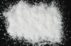

|
|
(For further information on spectroscopy, see:
http://speclab.cr.usgs.gov)
TITLE: Sillimanite HS186 DESCRIPT
DOCUMENTATION_FORMAT: MINERAL
SAMPLE_ID: HS186
MINERAL_TYPE: Nesosilicate
MINERAL: Sillimanite
FORMULA: Al2SiO5
FORMULA_HTML: Al2SiO5
COLLECTION_LOCALITY: Australia
ORIGINAL_DONOR: Hunt and Salisbury Collection
CURRENT_SAMPLE_LOCATION: USGS Denver Spectroscopy Laboratory
ULTIMATE_SAMPLE_LOCATION: USGS Denver Spectroscopy Laboratory
SAMPLE_DESCRIPTION:
"This comparatively rare mineral is found in high grade metamorphic rocks, particularly gneiss and schist. Its spectrum shows a rapid fall off in intensity to the blue, which is probably due to the trace of ferric ion replacing aluminum. This sample is slightly altered to montmorillonite, which accounts for the strong hydroxyl (1.4 and 2.2µm) and weaker water (1.9µm) bands. The 2.2µm feature is probably a combination of the OH stretch with the AlOH bend."
Hunt, G.R., J.W. Salisbury, and C.J. Lenhoff, 1973, Visible and near-infrared spectra of minerals and rocks: VI. Additional silicates. Modern Geology, v. 4, p. 85-106.
IMAGE_OF_SAMPLE:

END_SAMPLE_DESCRIPTION.
XRD_ANALYSIS:
Sillimanite plus small amount of quartz, trace amount of pyrophyllite. (Norma Vergo)
END_XRD_ANALYSIS.
COMPOSITIONAL_ANALYSIS_TYPE: None # XRF, EM(WDS), ICP(Trace), WChem
COMPOSITION_TRACE:
COMPOSITION_DISCUSSION:
No compositional analyses.
END_COMPOSITION_DISCUSSION.
MICROSCOPIC_EXAMINATION:
END_MICROSCOPIC_EXAMINATION.
SPECTROSCOPIC_DISCUSSION:
END_SPECTROSCOPIC_DISCUSSION.
SPECTRAL_PURITY: 1c2c3c4_ # 1= 0.2-3, 2= 1.5-6, 3= 6-25, 4= 20-150 microns
| LIB_SPECTRA_HED: | where | Wave Range | Av_Rs_Pwr | Comment |
|---|---|---|---|---|
| LIB_SPECTRA: | splib04a r 4467 | 0.2-3.0µm | 200 | g.s.= |
| LIB_SPECTRA: | splib05a r 6236 | 0.2-3.0µm | 200 | g.s.= |
| LIB_SPECTRA: | splib06a r 20572 | g.s.= | ||
| LIB_SPECTRA: | splib06a r 20584 | g.s.= |
{kind=link}